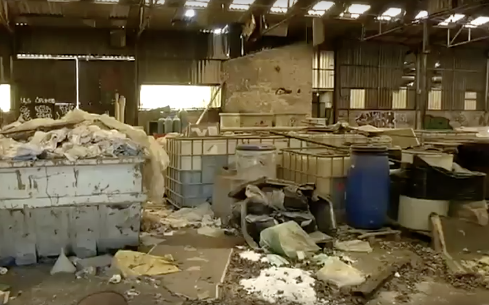

Les déchets, notre métier
Olli-B grâce à son indépendance et ses 30 années d'expérience, permet de proposer à l'ensemble des industriels, des filières de traitement ou de valorisation agrées les plus compétitives. Le tout en offrant une prestation globale pour la recherche de ces filières.
Collecte de déchets dangereux et non dangereux

La collecte de déchets concerne tout types de déchets classiques ou toxiques. Nous procédons à l’enlèvement d’eaux souillées, de boues, tout types d’acides et bases, etc... La collecte se fait directement chez vous par camions citerne ou par benne selon la nature des déchets et leur conditionnement. Quelque soit la nature et l ‘état de vos déchets, nous trouverons une solution innovante adaptée à vos besoins.
En savoir plusValorisation en cimenterie de combustibles de substitution

- Collecte de semences traitées
- Poudre de polyuréthane
- Plastiques
- Charbons actifs
- Produit a fort PCi
Assainissement friche industrielle
Vous avez un site a traiter entièrement ou laissé à l'abandon ? Nous prenons totalement en charge la dépollution du site tout types de déchets confudus y compris les déchets toxiques, le démentellement, la pollution des sols, le désiamiantage éventuel, le curage des bâtiments, etc...
En savoir plus